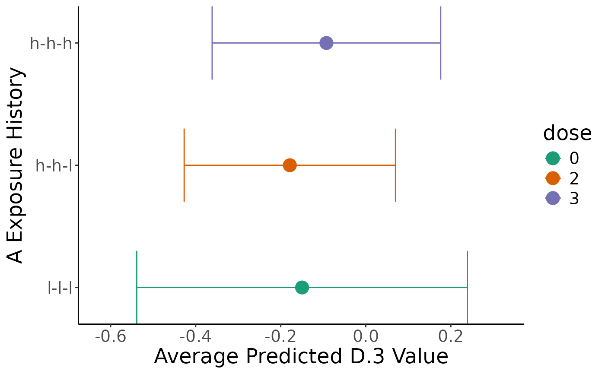

Estimate, compare, and visualize exposure histories
Source:R/compareHistories.R
compareHistories.RdTakes fitted model output to created predicted values for user-specified histories (pooling for imputed data), before conducting contrast comparisons (pooling for imputed data), correcting for multiple comparisons, and then plotting results.
Usage
compareHistories(
obj,
fit,
hi_lo_cut = c(0.3, 0.6),
dose_level = c("h", "l"),
reference = NULL,
comparison = NULL,
mc_comp_method = stats::p.adjust.methods,
verbose = FALSE,
save.out = FALSE,
home_dir
)
# S3 method for devMSM_comparisons
print(x, ...)
# S3 method for devMSM_comparisons
plot(
x,
colors = "Dark2",
exp_lab = NULL,
out_lab = NULL,
save.out = FALSE,
home_dir = NULL,
...
)
# S3 method for devMSM_comparisons
summary(object, type = c("preds", "comps"), ...)Arguments
- obj
initialized MSM object from
initMSM()- fit
list of model outputs from
fitModel()- hi_lo_cut
(optional) list of two numbers indicating quantile values that reflect high and low values, respectively, for continuous exposure (default is median split)
- dose_level
(optional) "l" or "h" indicating whether low or high doses should be tallied in tables and plots (default is high "h")
- reference
(optional) list sof one or more strings of "-"-separated "l" and "h" values indicative of a reference exposure history to which to compare comparison, required if comparison is supplied
- comparison
(optional) list of one or more strings of "-"-separated "l" and "h" values indicative of comparison history/histories to compare to reference, required if reference is supplied
- mc_comp_method
(optional) character abbreviation for multiple comparison correction method for stats::p.adjust, default is Benjamini-Hochburg ("BH")
- verbose
(optional) TRUE or FALSE indicator for printing output to console (default is FALSE)
- save.out
(optional) TRUE or FALSE indicator to save output and intermediary output locally (default is FALSE)
- home_dir
path to home directory (required if save.out = TRUE)
- x
devMSM_histories object from
compareHistories()- ...
ignored
- colors
(optional) character specifying Brewer palette or list of colors (n(epochs)+1) for plotting (default is "Dark2" palette)
- exp_lab
(optional) character label for exposure variable in plots (default is variable name)
- out_lab
(optional) character label for outcome variable in plots (default is variable name)
- object
devMSM_histories object from
compareHistories()- type
Either "preds" or "comps" corresponding to the results of
marginaleffects::avg_predictions()at low and high dosages ormarginaleffects::comparisons()respectively
Value
list containing two dataframes: preds with predictions from
marginaleffects::avg_predictions() containing average expected outcome
for different exposure histories and comps with contrasts from
marginaleffects::comparisons() comparing different exposure history
See also
marginaleffects::avg_predictions(),
https://cran.r-project.org/web/packages/marginaleffects/marginaleffects.pdf;
marginaleffects::hypotheses(),
https://cran.r-project.org/web/packages/marginaleffects/marginaleffects.pdf;
stats::p.adjust(),
https://www.rdocumentation.org/packages/stats/versions/3.6.2/topics/p.adjust;
Examples
library(devMSMs)
data <- data.frame(
ID = 1:50,
A.1 = rnorm(n = 50),
A.2 = rnorm(n = 50),
A.3 = rnorm(n = 50),
B.1 = rnorm(n = 50),
B.2 = rnorm(n = 50),
B.3 = rnorm(n = 50),
C = rnorm(n = 50),
D.3 = rnorm(n = 50)
)
obj <- initMSM(
data,
exposure = c("A.1", "A.2", "A.3"),
ti_conf = c("C"),
tv_conf = c("B.1", "B.2", "B.3", "D.3")
)
f <- createFormulas(obj, type = "short")
w <- createWeights(data = data, obj = obj, formulas = f)
fit <- fitModel(
data = data, obj = obj, weights = w,
outcome = "D.3", model = "m0"
)
comp = compareHistories(
obj, fit = fit,
hi_lo_cut = c(0.3, 0.6)
)
print(comp)
#> Summary of Exposure Main Effects:
#> USER ALERT: Out of the total of 50 individuals in the sample, below is the distribution of the 50 (100%) individuals that fall into 8 user-selected exposure histories (out of the 8 total) created from 60th and 30th percentile values for low and high levels of exposure-epoch A.1, A.2, A.3.
#> USER ALERT: Please inspect the distribution of the sample across the following exposure histories and ensure there is sufficient spread to avoid extrapolation and low precision:
#>
#> +---------------+----+
#> | epoch_history | n |
#> +===============+====+
#> | h-h-h | 6 |
#> +---------------+----+
#> | h-h-l | 6 |
#> +---------------+----+
#> | h-l-h | 7 |
#> +---------------+----+
#> | h-l-l | 6 |
#> +---------------+----+
#> | l-h-h | 3 |
#> +---------------+----+
#> | l-h-l | 10 |
#> +---------------+----+
#> | l-l-h | 9 |
#> +---------------+----+
#> | l-l-l | 3 |
#> +---------------+----+
#>
#> Table: Summary of user-selected exposure histories based on exposure main effects A.1, A.2, A.3:
#>
#> Below are the pooled average predictions by user-specified history:
#> +-------+-------+-------+-------+----------+-----------+---------+
#> | term | A.1 | A.2 | A.3 | estimate | std.error | p.value |
#> +=======+=======+=======+=======+==========+===========+=========+
#> | l-l-l | -0.64 | -0.76 | -0.67 | 0.14096 | 0.13 | 0.3 |
#> +-------+-------+-------+-------+----------+-----------+---------+
#> | l-l-h | -0.64 | -0.76 | 0.18 | 0.02594 | 0.16 | 0.87 |
#> +-------+-------+-------+-------+----------+-----------+---------+
#> | l-h-l | -0.64 | 0.18 | -0.67 | 0.11418 | 0.19 | 0.54 |
#> +-------+-------+-------+-------+----------+-----------+---------+
#> | l-h-h | -0.64 | 0.18 | 0.18 | -0.00085 | 0.22 | 1 |
#> +-------+-------+-------+-------+----------+-----------+---------+
#> | h-l-l | 0.15 | -0.76 | -0.67 | 0.00497 | 0.12 | 0.97 |
#> +-------+-------+-------+-------+----------+-----------+---------+
#> | h-l-h | 0.15 | -0.76 | 0.18 | -0.11006 | 0.13 | 0.41 |
#> +-------+-------+-------+-------+----------+-----------+---------+
#> | h-h-l | 0.15 | 0.18 | -0.67 | -0.02182 | 0.14 | 0.87 |
#> +-------+-------+-------+-------+----------+-----------+---------+
#> | h-h-h | 0.15 | 0.18 | 0.18 | -0.13684 | 0.16 | 0.4 |
#> +-------+-------+-------+-------+----------+-----------+---------+
#>
#> Conducting multiple comparison correction for all pairings between comparison histories and each refernece history using the holm method.
#>
#>
#> +-------------------+--------------+-----------+------------+--------------+
#> | term | estimate | std.error | p.value | p.value_corr |
#> +===================+==============+===========+============+==============+
#> | (l-l-l) - (l-l-h) | 0.115026539 | 0.1042361 | 0.26980186 | 1 |
#> +-------------------+--------------+-----------+------------+--------------+
#> | (l-l-l) - (l-h-l) | 0.026785271 | 0.1009357 | 0.79072472 | 1 |
#> +-------------------+--------------+-----------+------------+--------------+
#> | (l-l-l) - (l-h-h) | 0.141811810 | 0.1594267 | 0.37372838 | 1 |
#> +-------------------+--------------+-----------+------------+--------------+
#> | (l-l-l) - (h-l-l) | 0.135996273 | 0.1248167 | 0.27590365 | 1 |
#> +-------------------+--------------+-----------+------------+--------------+
#> | (l-l-l) - (h-l-h) | 0.251022812 | 0.1445182 | 0.08239367 | 1 |
#> +-------------------+--------------+-----------+------------+--------------+
#> | (l-l-l) - (h-h-l) | 0.162781545 | 0.1168876 | 0.16373075 | 1 |
#> +-------------------+--------------+-----------+------------+--------------+
#> | (l-l-l) - (h-h-h) | 0.277808084 | 0.1527504 | 0.06895635 | 1 |
#> +-------------------+--------------+-----------+------------+--------------+
#> | (l-l-h) - (l-h-l) | -0.088241267 | 0.1291878 | 0.49457762 | 1 |
#> +-------------------+--------------+-----------+------------+--------------+
#> | (l-l-h) - (l-h-h) | 0.026785271 | 0.1009357 | 0.79072471 | 1 |
#> +-------------------+--------------+-----------+------------+--------------+
#> | (l-l-h) - (h-l-l) | 0.020969735 | 0.1788945 | 0.90668697 | 1 |
#> +-------------------+--------------+-----------+------------+--------------+
#> | (l-l-h) - (h-l-h) | 0.135996273 | 0.1248167 | 0.27590366 | 1 |
#> +-------------------+--------------+-----------+------------+--------------+
#> | (l-l-h) - (h-h-l) | 0.047755006 | 0.1603841 | 0.76589095 | 1 |
#> +-------------------+--------------+-----------+------------+--------------+
#> | (l-l-h) - (h-h-h) | 0.162781545 | 0.1168876 | 0.16373077 | 1 |
#> +-------------------+--------------+-----------+------------+--------------+
#> | (l-h-l) - (l-h-h) | 0.115026539 | 0.1042361 | 0.26980180 | 1 |
#> +-------------------+--------------+-----------+------------+--------------+
#> | (l-h-l) - (h-l-l) | 0.109211002 | 0.1946067 | 0.57466911 | 1 |
#> +-------------------+--------------+-----------+------------+--------------+
#> | (l-h-l) - (h-l-h) | 0.224237541 | 0.1970136 | 0.25504409 | 1 |
#> +-------------------+--------------+-----------+------------+--------------+
#> | (l-h-l) - (h-h-l) | 0.135996273 | 0.1248167 | 0.27590365 | 1 |
#> +-------------------+--------------+-----------+------------+--------------+
#> | (l-h-l) - (h-h-h) | 0.251022812 | 0.1445182 | 0.08239367 | 1 |
#> +-------------------+--------------+-----------+------------+--------------+
#> | (l-h-h) - (h-l-l) | -0.005815537 | 0.2421972 | 0.98084337 | 1 |
#> +-------------------+--------------+-----------+------------+--------------+
#> | (l-h-h) - (h-l-h) | 0.109211002 | 0.1946067 | 0.57466909 | 1 |
#> +-------------------+--------------+-----------+------------+--------------+
#> | (l-h-h) - (h-h-l) | 0.020969735 | 0.1788945 | 0.90668697 | 1 |
#> +-------------------+--------------+-----------+------------+--------------+
#> | (l-h-h) - (h-h-h) | 0.135996273 | 0.1248167 | 0.27590352 | 1 |
#> +-------------------+--------------+-----------+------------+--------------+
#> | (h-l-l) - (h-l-h) | 0.115026539 | 0.1042361 | 0.26980183 | 1 |
#> +-------------------+--------------+-----------+------------+--------------+
#> | (h-l-l) - (h-h-l) | 0.026785271 | 0.1009357 | 0.79072470 | 1 |
#> +-------------------+--------------+-----------+------------+--------------+
#> | (h-l-l) - (h-h-h) | 0.141811810 | 0.1594267 | 0.37372848 | 1 |
#> +-------------------+--------------+-----------+------------+--------------+
#> | (h-l-h) - (h-h-l) | -0.088241267 | 0.1291878 | 0.49457761 | 1 |
#> +-------------------+--------------+-----------+------------+--------------+
#> | (h-l-h) - (h-h-h) | 0.026785271 | 0.1009357 | 0.79072471 | 1 |
#> +-------------------+--------------+-----------+------------+--------------+
#> | (h-h-l) - (h-h-h) | 0.115026539 | 0.1042361 | 0.26980184 | 1 |
#> +-------------------+--------------+-----------+------------+--------------+
plot(comp)

summary(comp, "preds")
#> term A.1 A.2 A.3 estimate std.error statistic
#> 1 l-l-l -0.6372518 -0.7592967 -0.6717776 0.1409631056 0.1348531 1.04530851
#> 2 l-l-h -0.6372518 -0.7592967 0.1824593 0.0259365670 0.1645631 0.15760864
#> 3 l-h-l -0.6372518 0.1753341 -0.6717776 0.1141778341 0.1850986 0.61684881
#> 4 l-h-h -0.6372518 0.1753341 0.1824593 -0.0008487045 0.2179927 -0.00389327
#> 5 h-l-l 0.1516888 -0.7592967 -0.6717776 0.0049668322 0.1208361 0.04110387
#> 6 h-l-h 0.1516888 -0.7592967 0.1824593 -0.1100597064 0.1339334 -0.82174963
#> 7 h-h-l 0.1516888 0.1753341 -0.6717776 -0.0218184393 0.1362827 -0.16009695
#> 8 h-h-h 0.1516888 0.1753341 0.1824593 -0.1368449779 0.1620908 -0.84424877
#> p.value s.value conf.low conf.high dose
#> 1 0.2958804 1.756913927 -0.1233441 0.4052703 0
#> 2 0.8747652 0.193032275 -0.2966012 0.3484743 1
#> 3 0.5373345 0.896107743 -0.2486087 0.4769644 1
#> 4 0.9968936 0.004488523 -0.4281066 0.4264091 2
#> 5 0.9672131 0.048094325 -0.2318676 0.2418013 1
#> 6 0.4112194 1.282019745 -0.3725643 0.1524449 2
#> 7 0.8728047 0.196269216 -0.2889276 0.2452907 2
#> 8 0.3985304 1.327238284 -0.4545372 0.1808472 3
summary(comp, "comps")
#> term estimate std.error statistic p.value s.value
#> 1 (l-l-l) - (l-l-h) 0.115026539 0.1042361 1.10351897 0.26980186 1.89002782
#> 2 (l-l-l) - (l-h-l) 0.026785271 0.1009357 0.26536964 0.79072472 0.33875256
#> 3 (l-l-l) - (l-h-h) 0.141811810 0.1594267 0.88951125 0.37372838 1.41993798
#> 4 (l-l-l) - (h-l-l) 0.135996273 0.1248167 1.08956763 0.27590365 1.85776356
#> 5 (l-l-l) - (h-l-h) 0.251022812 0.1445182 1.73696315 0.08239367 3.60132260
#> 6 (l-l-l) - (h-h-l) 0.162781545 0.1168876 1.39263315 0.16373075 2.61060278
#> 7 (l-l-l) - (h-h-h) 0.277808084 0.1527504 1.81870566 0.06895635 3.85817283
#> 8 (l-l-h) - (l-h-l) -0.088241267 0.1291878 -0.68304625 0.49457762 1.01573114
#> 9 (l-l-h) - (l-h-h) 0.026785271 0.1009357 0.26536966 0.79072471 0.33875259
#> 10 (l-l-h) - (h-l-l) 0.020969735 0.1788945 0.11721842 0.90668697 0.14132354
#> 11 (l-l-h) - (h-l-h) 0.135996273 0.1248167 1.08956761 0.27590366 1.85776351
#> 12 (l-l-h) - (h-h-l) 0.047755006 0.1603841 0.29775397 0.76589095 0.38478911
#> 13 (l-l-h) - (h-h-h) 0.162781545 0.1168876 1.39263311 0.16373077 2.61060266
#> 14 (l-h-l) - (l-h-h) 0.115026539 0.1042361 1.10351911 0.26980180 1.89002813
#> 15 (l-h-l) - (h-l-l) 0.109211002 0.1946067 0.56118840 0.57466911 0.79919660
#> 16 (l-h-l) - (h-l-h) 0.224237541 0.1970136 1.13818297 0.25504409 1.97118144
#> 17 (l-h-l) - (h-h-l) 0.135996273 0.1248167 1.08956763 0.27590365 1.85776356
#> 18 (l-h-l) - (h-h-h) 0.251022812 0.1445182 1.73696317 0.08239367 3.60132264
#> 19 (l-h-h) - (h-l-l) -0.005815537 0.2421972 -0.02401158 0.98084337 0.02790532
#> 20 (l-h-h) - (h-l-h) 0.109211002 0.1946067 0.56118844 0.57466909 0.79919665
#> 21 (l-h-h) - (h-h-l) 0.020969735 0.1788945 0.11721842 0.90668697 0.14132354
#> 22 (l-h-h) - (h-h-h) 0.135996273 0.1248167 1.08956791 0.27590352 1.85776421
#> 23 (h-l-l) - (h-l-h) 0.115026539 0.1042361 1.10351904 0.26980183 1.89002797
#> 24 (h-l-l) - (h-h-l) 0.026785271 0.1009357 0.26536966 0.79072470 0.33875260
#> 25 (h-l-l) - (h-h-h) 0.141811810 0.1594267 0.88951106 0.37372848 1.41993758
#> 26 (h-l-h) - (h-h-l) -0.088241267 0.1291878 -0.68304626 0.49457761 1.01573116
#> 27 (h-l-h) - (h-h-h) 0.026785271 0.1009357 0.26536965 0.79072471 0.33875258
#> 28 (h-h-l) - (h-h-h) 0.115026539 0.1042361 1.10351901 0.26980184 1.89002790
#> conf.low conf.high dose p.value_corr
#> 1 -0.08927251 0.3193256 0 - 1 1
#> 2 -0.17104508 0.2246156 0 - 1 1
#> 3 -0.17065871 0.4542823 0 - 2 1
#> 4 -0.10864003 0.3806326 0 - 1 1
#> 5 -0.03222768 0.5342733 0 - 2 1
#> 6 -0.06631394 0.3918770 0 - 2 1
#> 7 -0.02157727 0.5771934 0 - 3 1
#> 8 -0.34144477 0.1649622 1 - 1 1
#> 9 -0.17104506 0.2246156 1 - 2 1
#> 10 -0.32965712 0.3715966 1 - 1 1
#> 11 -0.10864004 0.3806326 1 - 2 1
#> 12 -0.26659208 0.3621021 1 - 2 1
#> 13 -0.06631395 0.3918770 1 - 3 1
#> 14 -0.08927248 0.3193256 1 - 2 1
#> 15 -0.27221105 0.4906330 1 - 1 1
#> 16 -0.16190205 0.6103771 1 - 2 1
#> 17 -0.10864003 0.3806326 1 - 2 1
#> 18 -0.03222768 0.5342733 1 - 3 1
#> 19 -0.48051331 0.4688822 2 - 1 1
#> 20 -0.27221103 0.4906330 2 - 2 1
#> 21 -0.32965712 0.3715966 2 - 2 1
#> 22 -0.10863997 0.3806325 2 - 3 1
#> 23 -0.08927249 0.3193256 1 - 2 1
#> 24 -0.17104506 0.2246156 1 - 2 1
#> 25 -0.17065877 0.4542824 1 - 3 1
#> 26 -0.34144477 0.1649622 2 - 2 1
#> 27 -0.17104506 0.2246156 2 - 3 1
#> 28 -0.08927250 0.3193256 2 - 3 1
comp2 = compareHistories(
obj, fit = fit,
reference = "l-l-l",
comparison = c("h-h-h", "h-h-l")
)
print(comp2)
#> Summary of Exposure Main Effects:
#> USER ALERT: Out of the total of 50 individuals in the sample, below is the distribution of the 15 (30%) individuals that fall into 3 user-selected exposure histories (out of the 8 total) created from 60th and 30th percentile values for low and high levels of exposure-epoch A.1, A.2, A.3.
#> USER ALERT: Please inspect the distribution of the sample across the following exposure histories and ensure there is sufficient spread to avoid extrapolation and low precision:
#>
#> +---------------+---+
#> | epoch_history | n |
#> +===============+===+
#> | h-h-h | 6 |
#> +---------------+---+
#> | h-h-l | 6 |
#> +---------------+---+
#> | l-l-l | 3 |
#> +---------------+---+
#>
#> Table: Summary of user-selected exposure histories based on exposure main effects A.1, A.2, A.3:
#>
#> Below are the pooled average predictions by user-specified history:
#> +-------+-------+-------+-------+----------+-----------+---------+
#> | term | A.1 | A.2 | A.3 | estimate | std.error | p.value |
#> +=======+=======+=======+=======+==========+===========+=========+
#> | l-l-l | -0.64 | -0.76 | -0.67 | 0.141 | 0.13 | 0.3 |
#> +-------+-------+-------+-------+----------+-----------+---------+
#> | h-h-l | 0.15 | 0.18 | -0.67 | -0.022 | 0.14 | 0.87 |
#> +-------+-------+-------+-------+----------+-----------+---------+
#> | h-h-h | 0.15 | 0.18 | 0.18 | -0.137 | 0.16 | 0.4 |
#> +-------+-------+-------+-------+----------+-----------+---------+
#>
#> Conducting multiple comparison correction for all pairings between comparison histories and each refernece history using the holm method.
#>
#>
#> +-------------------+------------+-----------+-----------+--------------+
#> | term | estimate | std.error | p.value | p.value_corr |
#> +===================+============+===========+===========+==============+
#> | (h-h-h) - (l-l-l) | -0.2996265 | 0.2297635 | 0.1922115 | 0.384423 |
#> +-------------------+------------+-----------+-----------+--------------+
#> | (h-h-l) - (l-l-l) | -0.2996265 | 0.2297635 | 0.1922115 | 0.384423 |
#> +-------------------+------------+-----------+-----------+--------------+
plot(comp2)
 summary(comp2, "preds")
#> term A.1 A.2 A.3 estimate std.error statistic
#> 1 l-l-l -0.6372518 -0.7592967 -0.6717776 0.14096311 0.1348531 1.0453085
#> 7 h-h-l 0.1516888 0.1753341 -0.6717776 -0.02181844 0.1362827 -0.1600969
#> 8 h-h-h 0.1516888 0.1753341 0.1824593 -0.13684498 0.1620908 -0.8442488
#> p.value s.value conf.low conf.high dose
#> 1 0.2958804 1.7569139 -0.1233441 0.4052703 0
#> 7 0.8728047 0.1962692 -0.2889276 0.2452907 2
#> 8 0.3985304 1.3272383 -0.4545372 0.1808472 3
summary(comp2, "comps")
#> term estimate std.error statistic p.value s.value
#> 1 (h-h-h) - (l-l-l) -0.2996265 0.2297635 -1.304065 0.1922115 2.379234
#> 2 (h-h-l) - (l-l-l) -0.2996265 0.2297635 -1.304065 0.1922115 2.379234
#> conf.low conf.high dose p.value_corr
#> 1 -0.7499547 0.1507017 3 - 0 0.384423
#> 2 -0.7499547 0.1507017 2 - 0 0.384423
summary(comp2, "preds")
#> term A.1 A.2 A.3 estimate std.error statistic
#> 1 l-l-l -0.6372518 -0.7592967 -0.6717776 0.14096311 0.1348531 1.0453085
#> 7 h-h-l 0.1516888 0.1753341 -0.6717776 -0.02181844 0.1362827 -0.1600969
#> 8 h-h-h 0.1516888 0.1753341 0.1824593 -0.13684498 0.1620908 -0.8442488
#> p.value s.value conf.low conf.high dose
#> 1 0.2958804 1.7569139 -0.1233441 0.4052703 0
#> 7 0.8728047 0.1962692 -0.2889276 0.2452907 2
#> 8 0.3985304 1.3272383 -0.4545372 0.1808472 3
summary(comp2, "comps")
#> term estimate std.error statistic p.value s.value
#> 1 (h-h-h) - (l-l-l) -0.2996265 0.2297635 -1.304065 0.1922115 2.379234
#> 2 (h-h-l) - (l-l-l) -0.2996265 0.2297635 -1.304065 0.1922115 2.379234
#> conf.low conf.high dose p.value_corr
#> 1 -0.7499547 0.1507017 3 - 0 0.384423
#> 2 -0.7499547 0.1507017 2 - 0 0.384423